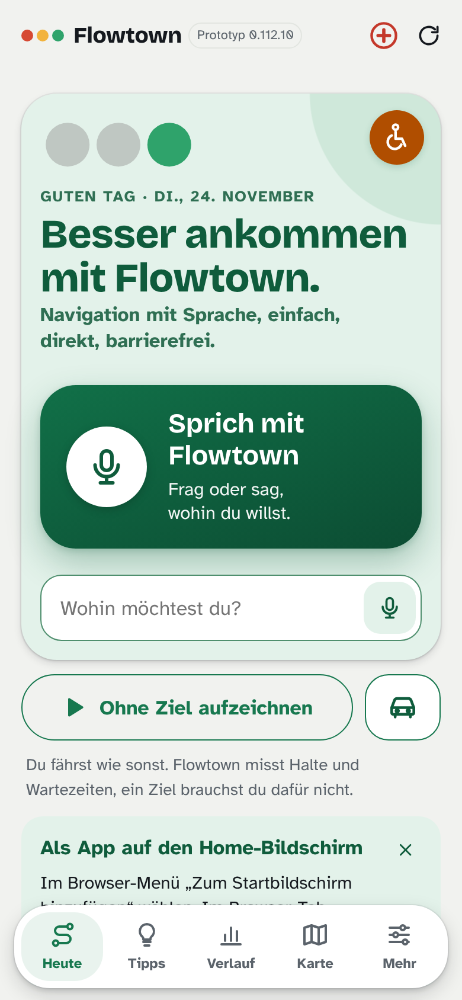
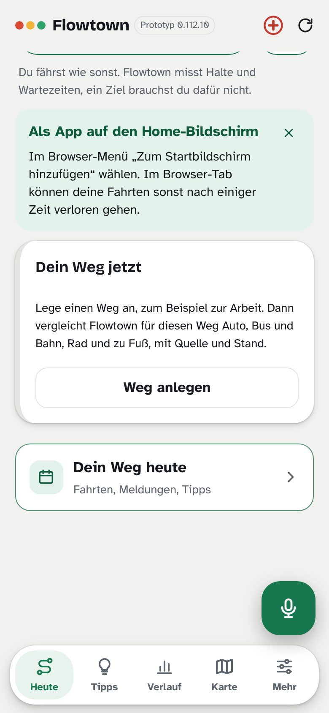
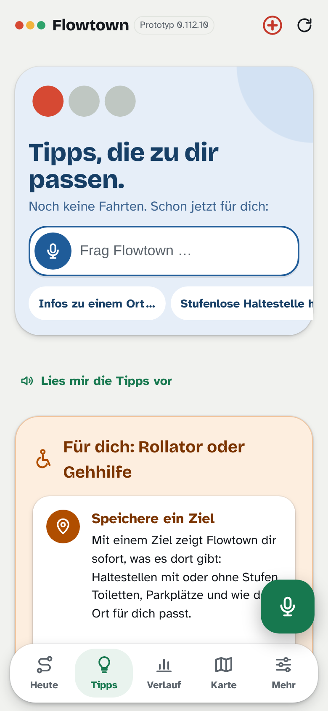

Mit dem Auto
Parkplätze, Behindertenparkplätze, Baustellen und Sperrungen auf der Strecke.
Flowtown ist für alle, die unterwegs sind. Sag oder tippe, wohin du willst. Flowtown zeigt, womit du am besten ankommst und was auf dem Weg gilt, mit Quelle und Stand.
Kostenlos. Ohne Konto. Keine Cookies.

Mit dem Auto, mit Bus und Bahn, mit dem Fahrrad oder zu Fuß, mit Kinderwagen, Rollator oder Rollstuhl. Flowtown vergleicht die Wege und zeigt, was für dich wichtig ist.
Parkplätze, Behindertenparkplätze, Baustellen und Sperrungen auf der Strecke.
Abfahrten, Störungen, Aufzüge und ein anderer Weg, wenn etwas ausfällt.
Radwege und Strecken. Angaben zu Ampeln und Querungen, mit Quelle und Stand.
Stufenlose Wege, Treppen vorher angesagt, Eingänge und Ruhezonen unterwegs.
Deshalb zeigt Flowtown nicht alles, was über einen Ort bekannt ist. Sondern das, was für dein Profil wichtig ist. Wer kein Profil braucht, lässt es aus.
„Ich möchte zur Uni.“ Du kannst fragen oder das Ziel ins Suchfeld tippen.
Auto, Bus und Bahn, Rad und zu Fuß, jeweils mit den Angaben und dem Stand.
Gerade jetzt: Störungen, Baustellen und Aufzüge. Mit einem Ersatzweg, wenn etwas ausfällt.
Zum Beispiel zur Arbeit. Flowtown vergleicht Auto, Bus und Bahn, Rad und zu Fuß, jeweils mit Quelle und Stand.
Ein Beispiel aus der App.

Filter für Barrierefrei, Behindertenparkplätze, Radwege und mehr. Ein Tipp auf einen Punkt zeigt die Angabe mit Quelle, zum Beispiel: „Rollstuhlgerechte Toilette, Stadt Bielefeld (Open Data)“.
Kartendaten: © OpenStreetMap-Mitwirkende

Ist ein Profil eingestellt, zeigt Flowtown zuerst passende Tipps. Zum Beispiel: Speichere ein Ziel, dann siehst du, welche Haltestellen mit oder ohne Stufen erreichbar sind.

Jede Angabe trägt ihre Quelle und ihr Alter. Fehlt sie, steht dort „keine Angabe“. Unbekannt ist nie „passt“.
Im Pilot sind die Altstadt, der Hauptbahnhof, Bethel und die Universität. Mehr Orte und Städte sind geplant, nicht zugesagt.